卡方检验是一种针对「分类」变量进行统计假设检验的方法，可以分为两种：
- 卡方适合性检验：
检验一组分类变量的频数分布与期望的频数分布是否一致；
例如：检验交通路口从周一到周日发生交通事故的数量是否一致。
- 卡方独立性检验：
检验两个分类变量之间是否有关联，可以转换成适合性检验。
例如：性别和选择文理科之间是否存在关联
卡方检验需要使用卡方分布来作为统计量的理论统计分布；进行卡方检验前一般想要进行交叉分析或者进行数据透视操作，用来得到交叉表或者频率表；
透视表/交叉表
例如：目前身份的实际频数。
分析 － 描述 － 频率
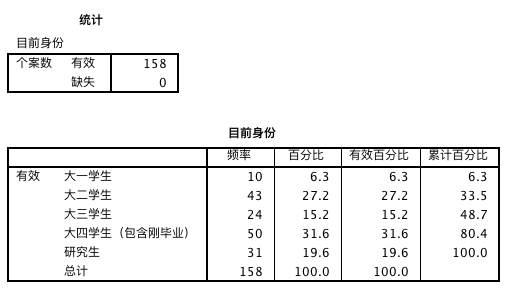
例如：不同性别学生就读的学校类型交叉表。
分析 － 描述 － 交叉表
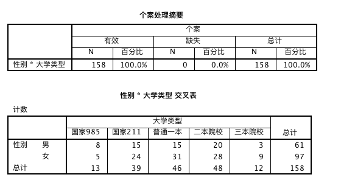
什么是分类数据？
表示类别的数据：
- 无序分类：性别
- 有序分类：学历、年龄段、工资区间、问卷满意度调查
分类数据的表示方法：
- 一般在分析过程中用数字来表示这些类别；（值标签的作用）
- 用数字表示类别的过程称为编码；
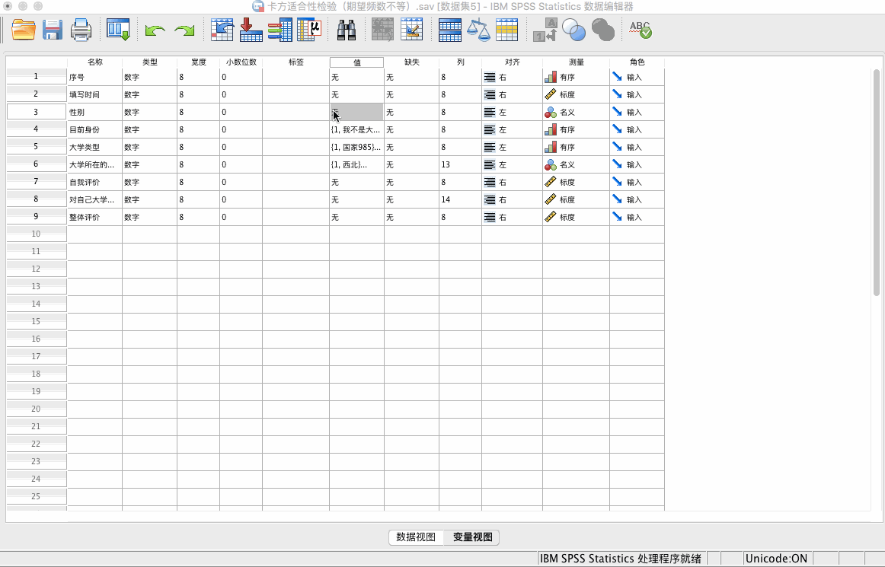
卡方检验原理
卡方统计量：
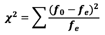
𝒇𝟎 表示理论频数，𝒇e 表示实际频数，两者之间相差越大，卡方也会越大。
当理论分布与实际分布完全相同，卡方值为 0。
卡方检验的步骤：
第一步：建立假设（原假设为分类变量实际的频数分布与理论分布一致）
第二步：根据实际的频数与理论频数计算 𝝌𝟐 统计量，并根据卡方分布得到对应的 p 值（sig 值）；
第三步：根据 p 值决定是否接受原假设；如果 p 小于 0.05，则拒绝原假设，即认为变量的实际频数与理论分布不一致；
卡方适合性检验
检验实际的频数与给定的理论频数是否一致。一般给出的不是直接的理论频数，而是：
- 理论的比率
- 理论上的分布
例题1：
针对大学群体（包括研究生）的研究调查，样本来源于大一、大二、大三、大四、研究生的比例是否为 0.2:0.2:0.2:0.1:0.3 ？（期望频数不等）
SPSS 工具：
分析 － 非参数检验 － 旧对话框 － 卡方
期望值按照顺序依次填入期望的比例（需要根据值标签来查看）
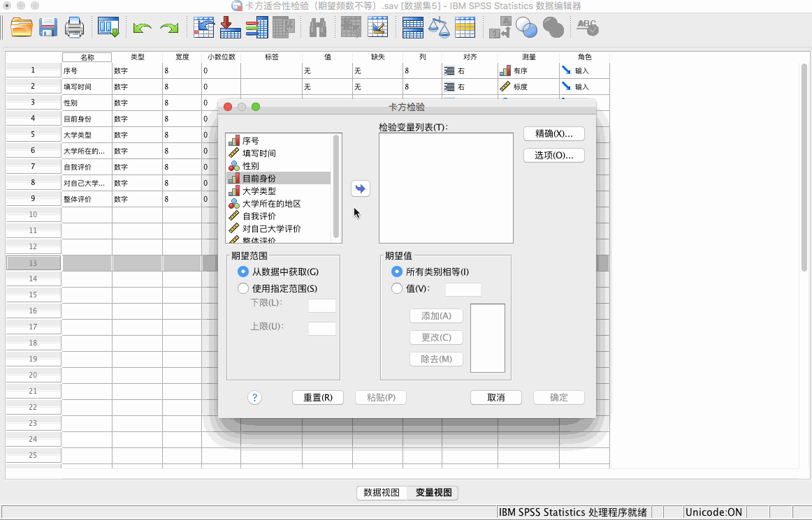
结论：
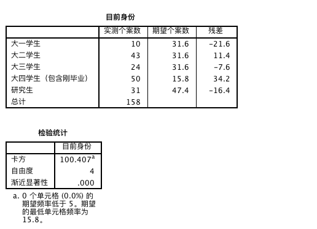
p = 0.000 < 0.05，拒绝原假设，即实际分布与理论分布不一致。
具体来看，残差越大表明分布越不一致。大四残差最大，其次为大一、研究生，我们需要减少大四、大一和研究生样本。
例题2：
某奶制品厂商在某次对消费者对不同酸奶的口味调查中，对 1000 个人进行了调查，那么消费者对不同口味的酸奶的喜好是否有显著差异？（期望频数相等）
原始数据格式：
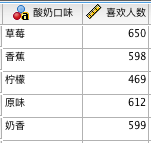
SPSS 工具：
数据 － 个案加权
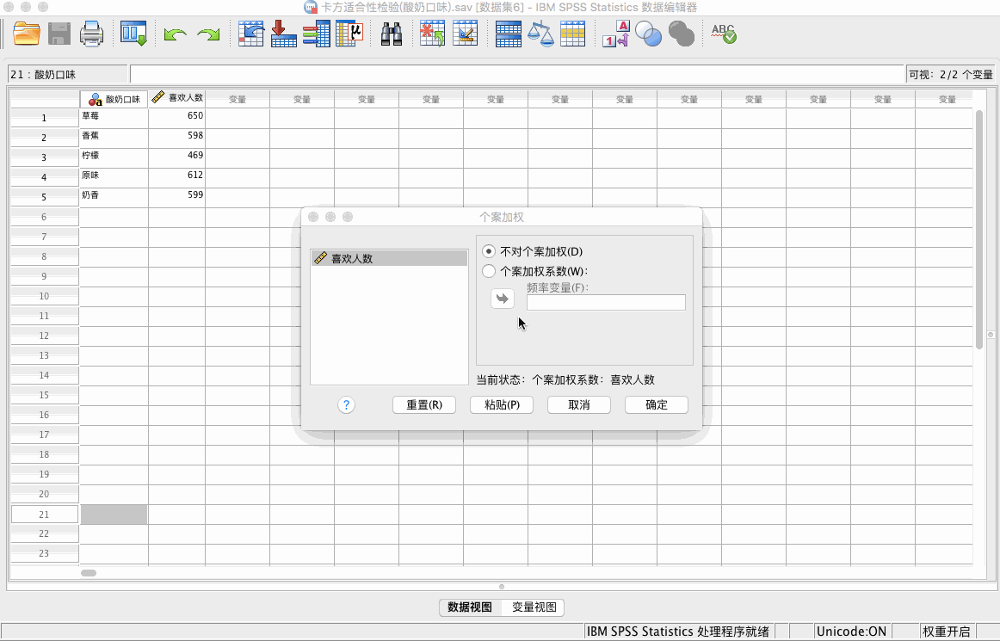
然后我们通过查看频率可以得到如下结果：
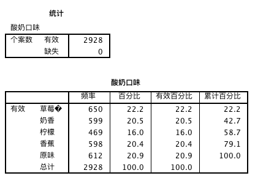
注：如果不做加权处理，则得到的频率应该为 1。
分析 － 非参数检验 － 旧对话框 － 卡方
期望值选择 “所有类别相等”
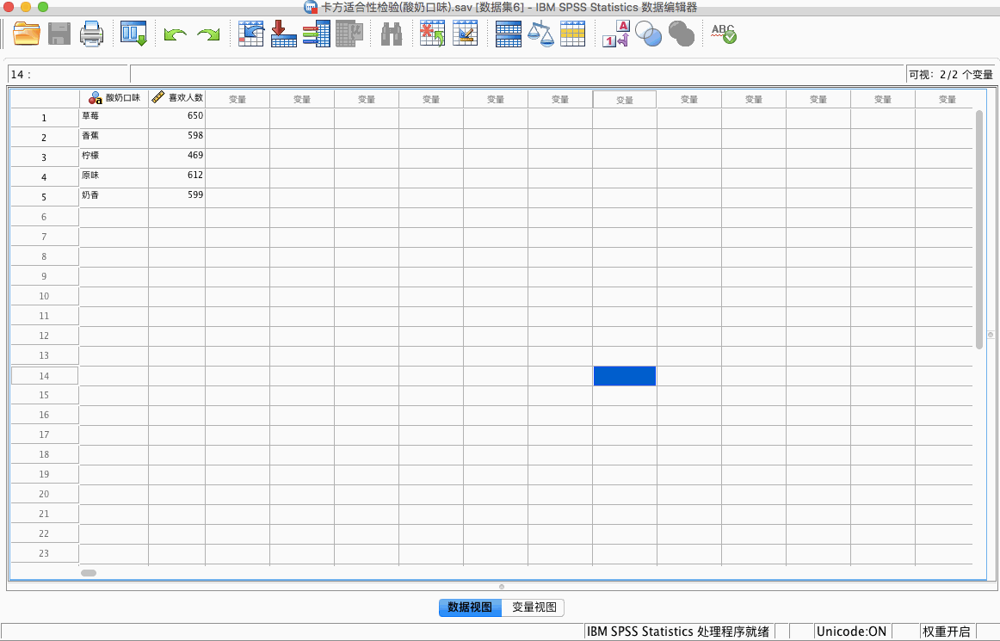
结论：
p = 0.000 < 0.05，拒绝原假设，即人们对于不同口味是存在差异的。
最喜欢的是草莓味，最不喜欢的是柠檬味。
卡方独立性检验
检验两个分类变量之间是否相互独立，实际上独立性检验是通过转换成适合性检验而完成的。
原假设：两个变量之间相互独立；
备择假设：两变量相互影响；
卡方独立性检验的步骤：
第一步：建立假设（原假设为两个分类变量之间相互独立）
第二步：基于原假设为真的情况，计算理论频数，然后计算卡方统计量；并根据卡方分布得到 p 值；
第三步：判断原假设是否成立；
例题1：
某种植物在不同地形下栽培患病与否有关吗？
原始数据格式：
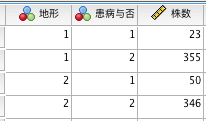
SPSS 工具：
数据 － 个案加权
对株数进行加权
分析 － 描述 － 交叉表
统计 － 勾选“卡方”
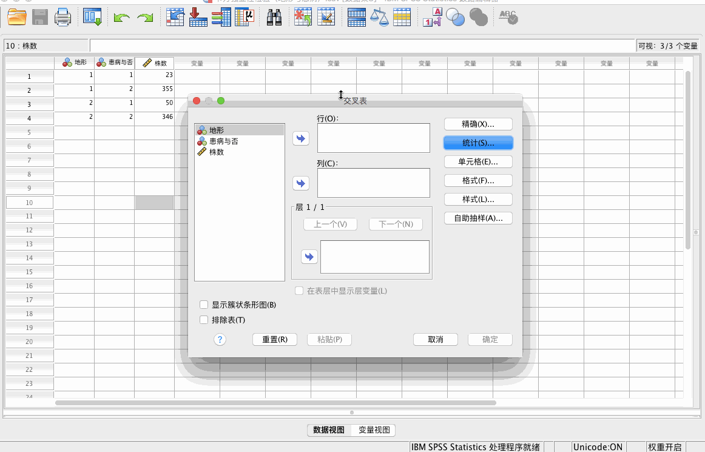
结论：
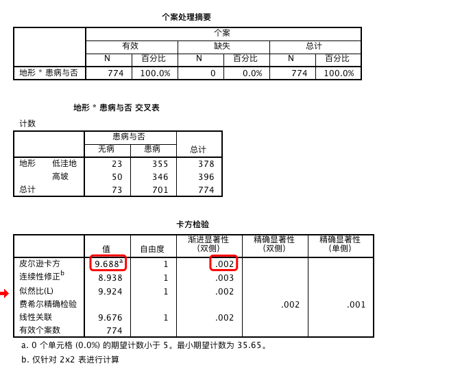
交叉表表明了实际频数，理论频数是根据交叉表计算比例得到的
自由度是 (行数-1)*(列数-1)
p = 0.002 < 0.005，拒绝原假设，即地形与患病与否是有关的